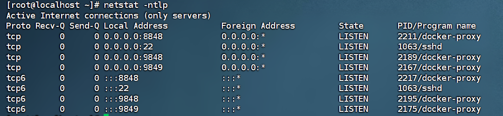
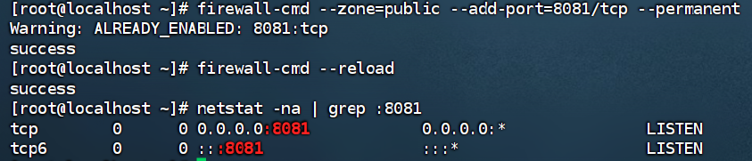

这篇文章上次修改于 428 天前，可能其部分内容已经发生变化，如有疑问可询问作者。
我们有时候会遇到在部署完Nginx之后，并且也将前端网页放入了指定文件夹后，却怎么也访问不了的情况。这次教程偏向的是虚拟机部署的Nginx无法访问的情况，而云服务器部署的Nginx则可以去查看一下网络以及文件是否完整来检查自己的部署是否正确。
1.使用nestata查看端口
如果没有可以下载一下
1.yum -y install net-tools
2.https://vault.centos.org/7.9.2009/os/x86_64/Packages/net-tools-2.0-0.25.20131004git.el7.x86_64.rpm
rpm -ivh net-tools-2.0-0.25.20131004git.el7.x86_64.rpm
2.查看当前所有TCP端口
netstat -ntlp //查看当前所有tcp端口·

3.开启
netstat -na | grep :8081 确保没有开启8081端口
4.开放指定端口
1 | firewall-cmd --zone=public --add-port=8081/tcp --permanent |
5.重启防火墙
1 | firewall-cmd --reload |
6.再次查看端口
netstat -ntlp
